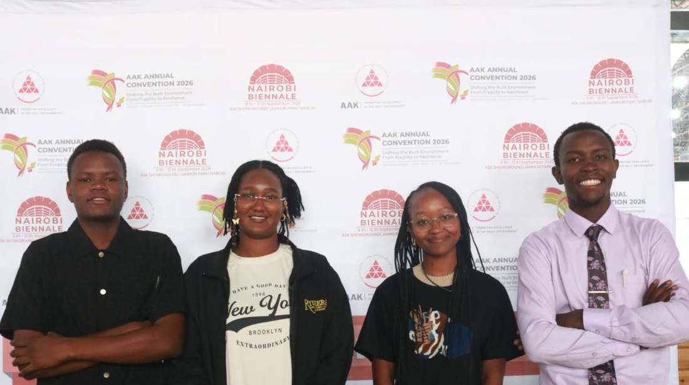

Vision
To be the leading national platform for architecture students and graduate architects that promotes excellence, innovation, leadership and professionalism.
Architecture students. One national network.

ASA Kenya is the umbrella body representing architecture students and graduate architects in Kenya. Each member university keeps its own identity, leadership and activities. ASA Kenya is the connector.

To be the leading national platform for architecture students and graduate architects that promotes excellence, innovation, leadership and professionalism.
To unite architecture students and graduate architects through mentorship, professional development, advocacy, research, networking and collaboration while bridging the gap between academia and professional practice.
Term shown on the source material: September 2026 to September 2027. Governance structure and constitution: link to be added.
Six member universities today, with room for more. Select a node to open its profile. Positions are an architectural interpretation, not survey-accurate.
FOR STUDENTS
Everything an architecture student can apply to, join or attend, indexed in one place.
Only verified figures are shown. Others appear once ASA Kenya confirms them.
SHEET S-00 / INDEX OF OPPORTUNITIES
Twelve kinds of opportunity, one index. Pick a sheet to see what is open, or search across all of them.
Submissions are reviewed by ASA Kenya before they are published. Only verified opportunities are listed.
One national calendar for ASA Kenya and every member university. Calendar year: September 2026 to September 2027.
Dates and venues will be announced.
A library for architecture students. Downloads are added only where ASA Kenya has permission.
Student stories, chapter activities, interviews, research and event reports.
Students will be able to submit articles in a later release.
Back a specific initiative instead of giving general sponsorship. Industry reaches students, and students reach industry, through one structured national channel.
Partnership details to be confirmed.
Ask a question, become a member, raise a concern at the Baraza, propose a partnership or share feedback.
Email
contact.asakenya@gmail.com
Phone
(+254) 729 088041
Instagram
@asakenya